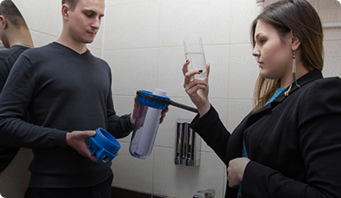

Приехали молодые люди, разулись, быстро установили, всё за собой убрали и уехали. Осталась очень довольна, теперь рекомендую друзьям и всем рассказываю о преимуществах своей системы очистки воды.
Отзывы о нас
Юлия Онегина
Дмитрий Алехин
Долгое время мы пользовались доставкой воды до квартиры или набирали бутыли сами в ближайшем аппарате раздачи, а это очень неудобно. Очень часто доставка либо переносилась, либо очень опаздывала, и приходилось ждать, да и расходы составляли около 1000 рублей в месяц. Стоит ли вообще говорить про то, что дома всегда было много бутылок, которые очень мешали. От знакомых случано узнали про Фильтрон, которые предоставляют аренду системы очистки воды. Оказалось, что это очень удобно — чистая вода всегда в доме и не надо никого ждать.
Андрей Куприков

Как-то давно уже ставил фильтры, и мне ничего толком не объяснили, а ребята из Фильтрона по первому звонку приезжают и все делают сами!
Антон Гордин
Кратко не получится, поэтому расскажу историю целиком. В 2020 году мне позвонил менеджер Фильтрона с уникальным предложением. Я как раз доделывал ремонт и решил вложиться в кофморт с головой. Фильтры и кран мне установили за 2 часа, оставив номер телефона и предупреждение: если что, звонить только им. Чем я и воспользовался, когда пытался сам поменять фитинги. Мастера приехали ко мне к назначенному времени, все сделали и уехали. Фильтры — это, конечно, хорошо, а вот хороший сервис есть не везде.
Еремин Андрей
Случайно услышал от знакомого про компанию и услугу, которую они оказывают. Рассказали, как можно на этом сэкономить не только деньги, но и свое время. Меня это заинтересовало, и я решил тоже воспользоваться услугой. Позвонил в компанию и заказал установку. Очень удобно, самое главное, что цена адекватная и «все включено» в эту сумму. Приехали, бесплатно установили, объяснили все моменты. При этом мне не нужно будет думать, как и когда ее обслуживать. Эти вопросы тоже берет на себя компания. Теперь я пью воду за 490 рублей и ни о чем не думаю.
Смирнова Анастасия
Больше всего я переживала за раковину, т.к. она у нас из камня. Встал вопрос, как будут делать отверстие для отдельного крана от системы. Волновалась зря- все установили аккуратно, кранчик как будто там и был) Сама система компактная, удобно встала под мойкой. 8 ступеней очистки, бак накопительный- удобно, если воду отключат- запас питьевой воды всегда есть. Увидела такую систему у своей знакомой и сразу поняла, что нам нужна такая. Живя за городом мы привыкли пить чистую воду. Когда вернулись в город поняли, что нужно срочно решать эту проблему. Мне понравился Фильтрон своим подходом к делу. Все устанавливают бесплатно, сами следят за заменой фильтров (это меня подкупило больше всего), ты просто платишь абонентскую плату и все)
Смирнова Анастасия
Мы с сыном подключились к ОТТО и закрыли вопрос о воде полностью.
Во-первых, вода чистая, можно пить без кипячения.
Во-вторых- она БЕЗЛИМИТНАЯ! пей сколько хочешь, мой фрукты, овощи, да хоть и посуду мой)
В-третьих- покупать не нужно, мы наливаем её с собой в стеклянную бутылку и пьём в течение дня на прогулках.
В четвертых- нас спас накопительный бак. Когда воду отключали на 2 дня, мы водой были обеспечены)
Дмитрий Алехин
Долгое время мы пользовались доставкой воды до квартиры или набирали бутыли сами в ближайшем аппарате раздачи, а это очень неудобно. Очень часто доставка либо переносилась, либо очень опаздывала, и приходилось ждать ...
Андрей Куприков
Как-то давно уже ставил фильтры, и мне ничего толком не объяснили, а ребята из Фильтрона по первому звонку приезжают и все делают сами!